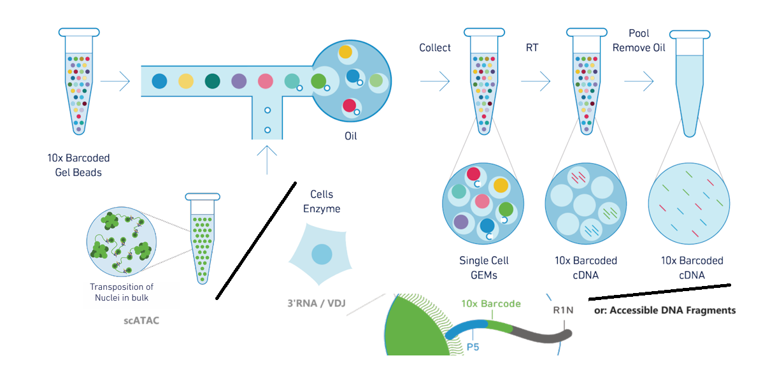

CellRanger
10x Genomics 单细胞测序数据处理工具，默认示例为scRNA的处理选项
注意：下方代码中换行只是为了看起来方便，实际使用如果出错则删掉换行
Chromium
10x Chromium平台提供单细胞水平的以下测序： 3' gene expression，5' gene expression alongside V(D)J repertoire profiling，ATAC
其原理大致为：将待测物质放入带有barcode的小液珠中进行标记，随后统一进行测序。

scRNA
Install
参考Installing Cell Ranger tutorial，填写个人信息后可下载得到压缩包，$PWD中解压：
tar -xzf cellranger-7.1.0.tar.gz
export PATH=$PWD/cellranger-7.1.0:$PATH
注意，它依赖bcl2fastq:
conda install -c dranew bcl2fastq
之后使用sitecheck测试系统与硬件要求，testrun选一个小数据集试测。
mkfastq
将bcl转换为fastq，输出的fq文件位于output_folder/outs/中
cellranger mkfastq
--id=<output_folder> ## output folder
--run=<bcl_folder> ## bcl folder (provided by illumina)
--csv=<bcl_csv> ## bcl csv (provided by illumina)
详见link
mkgtf/mkref
生成 10x-compatible transcriptome reference
## Filter GTF
cellranger mkgtf <input.gtf> <filtered.gtf>
--attribute=<key:value> ## attributes to be kept in the GTF file
--attribute=gene_biotype:protein_coding
--attribute=gene_biotype:IG_LV_gene
## make transcriptome ref
cellranger mkref
--genome=<name> ## Unique genome name(s), used to name output folder; if multiple, output folder will be <name1>_and_<name2>
--fasta=<ref1.fa> ## Path(s) to FASTA file; if multiple fa, specifying --fasta multiple times
--genes=<filtered.gtf> ## Path(s) to genes GTF file; if multiple gtf, specifying --genes multiple times
详见link；其中attribute可参考：gene_biotype, GTF attributes
count
将reads映射至参考基因组(STAR进行比对)，分选计数，并且生成 .cloupe file 以供 Loupe Browser中的可视化和分析；Naming convention: (Sample_A_S1_L00X_R1_001.fastq.gz), sample_PREFIX(Sample_A), Lane(L00X)；最好存在sample_PREFIX_xxx/文件夹中
cellranger count
--id=<output_folder>
--fastqs=<fastq_folder>
--sample=<sample_PREFIX> ## select sample from <fastq_folder>
--transcriptome=<ref_folder>
## cellranger count --help 查看更多filter选项（lane、长度、等等）
## --target-panel 计算Targeted Gene Expression，见下文
详见link
- 结果于output_folder/outs中
├── analysis/ ## clustering, diffexp, pca, tsne, umap
├── cloupe.cloupe ## downstream: Loupe Browser
├── filtered_feature_bc_matrix/ ## downstream: monocle, Seurat, ...
│ ├── barcodes.tsv.gz
│ ├── features.tsv.gz
│ └── matrix.mtx.gz
├── filtered_feature_bc_matrix.h5
├── metrics_summary.csv
├── molecule_info.h5 ## for other cellranger pipe
├── possorted_genome_bam.bam
├── possorted_genome_bam.bam.bai
├── raw_feature_bc_matrix/
├── raw_feature_bc_matrix.h5
└── web_summary.html
aggr (opt.)
整合多个Cell Ranger counts的结果；
举例：除开Cell Multiplexing情况，一份样品(sample)放在一个GEM well中，多个GEM well的情况下必须为每个well分别运行count操作
准备一个h5.csv (h5为count结果中molecule_info.h5):
sample_id,molecule_h5
AA,abs_path_AA_h5
BB,abs_path_BB_h5
run:
cellranger aggr --id=<output_folder> --csv=<h5.csv>
详见link
output_folder:
├── aggregation.csv
├── count
│ ├── analysis/
│ ├── cloupe.cloupe
│ ├── filtered_feature_bc_matrix/
│ ├── filtered_feature_bc_matrix.h5
│ └── summary.json
└── web_summary.html
multi (opt.)
Cell Multiplexing情况下使用。简单来说就是许多样本各自加上CMO tag后pool到一起，加到同一个GEM well中 (可以想象多样本加到lane中的情况，只不过GEM well是生成小液滴的步骤)。
准备一个config.csv，可用 cellranger multi-template 生成示例
[gene-expression]
ref,<ref_folder>
[libraries]
fastq_id,fastqs,lanes,feature_types
MM_1_gex,<MM_1_gex_fastqs>,any,Gene Expression
MM_1_multiplexing_capture,<MM_1_multiplexing_capture_fastqs>,any,Multiplexing Capture
[samples]
sample_id,cmo_ids,description
S1,CMO301,SampleN1
S2,CMO302,SampleN2
结果生成在output_folder/outs/中:
cellranger multi --id=<output_folder> --csv=<config.csv>
详见link
targeted-depth (opt.)
给定WTA(whole transcriptome analysis)数据集、目标基因集，计算目标基因的在WTA中占比、在cell中均值; 其结果有助于计算目标基因表达实验的测序深度
molecule_info.h5为count操作输出，target_panel可从Cell Ranger安装目录中target_panels/中找到（human only），或参考Panel Selection
cellranger targeted-depth --molecule-h5 <molecule_info.h5> --target-panel <target_panel.csv>
注意reference，否则:
error: The gene b'ENSG00000286070' from the target panel csv is not present
in the reference transcriptome used by the molecule info h5 file.
详见link
targeted-compare (opt.)
需要同时先对WTA(称parent) 与 target-panel(称target, 可视为hybrid capture的结果) 进行count，注意：reference必须一致、target_panel.csv也要相符
cellranger count --id=target --target-panel <target_panel.csv> ...
cellranger count --id=parent ...
评估target的富集程度、于parent的占比:
cellranger targeted-compare
--id=<output_folder>
--targeted=<target_molecule_info.h5>
--parent=<parent_molecule_info.h5>
--target-panel <target_panel.csv>
详见link
VDJ(T/B Cell)
-
原理：定向扩增VDJ区的转录本
- barcode/umi校正
- tirm
- 组装
- 标注CDR3区：Reference中已有一些V区J区的Motif，CDR3区横跨二者（起始C，长5-27aa）
- Filter contigs，鉴于每个T/B细胞只会有两条链：VJ & VDJ，多余类型的Contig只可能是噪音
- Call Cells
-
基于CDR3区序列(exact match)，区分Clonotype，同时得到它们的丰度
-
multi分析时的一些情况：
- T细胞：VDJ cells 数目远少于 GEX cells -- 可能是因为TCR表达量少
- B细胞：VDJ cells 数目远多于 GEX cell -- 可能是因为浆细胞负责分泌大量Ig(类似游离态的BCR)
- 一般将VDJ cells作为GEX cells的背景
Other Opt
vdj Assembles single-cell VDJ receptor sequences from 10x Immune Profiling libraries
reanalyze Re-run secondary analysis (dimensionality reduction, clustering, etc)
mkvdjref Prepare a reference for use with CellRanger VDJ
mat2csv Convert a gene count matrix to CSV format
参考Cell Ranger V(D)J：得到FASTQ后用Loupe进行查看
scATAC
参考Cell Ranger ATAC，其流程类似上文scRNA数据的处理：
cellranger-atac mkfastq ## BCL => FASTQ
cellranger-atac count ## Mapping & PeakCalling & PeakFiltering
对于Multiplexing情况依旧有 cellranger-atac aggr 对多样本生成统一的count matches(peaks)，但由于数据质量差异较大的情况，建议分群pseudo-bulk后再用 MACS2 重新进行 PeakCalling
10x Fastq格式示例
- I1：Sample Index (opt.)
@A00228:279:HFWFVDMXX:1:1101:8486:1000 1:N:0:NCATTACT
NCATTACT
+
#FFFFFFF
@A00228:279:HFWFVDMXX:1:1101:10782:1000 1:N:0:NCATTACT
NCATTACT
+
#FFFFFFF
- R1：cell barcode + UMI (16bp + 12bp)
@A00228:279:HFWFVDMXX:1:1101:8486:1000 1:N:0:NCATTACT
NGTGATTAGCTGTACTCGTATGTAAGGT
+
#FFFFFFFFFFFFFFFFFFFFFFFFFFF
@A00228:279:HFWFVDMXX:1:1101:10782:1000 1:N:0:NCATTACT
NTCATGAAGTTTGGCTAGTTATGTTCAT
+
#FFFFFFFFFFFFFFFFFFFFFFFFFFF
- R2：插入片段
@A00228:279:HFWFVDMXX:1:1101:8486:1000 2:N:0:NCATTACT
NACAAAGTCCCCCCCATAATACAGGGGGAGCCACTTGGGCAGGAGGCAGGGAGGGGTCCATTCCCCCTGGTGGGGCTGGTGGGGAGCTGTA
+
#FFFFFFFFFFFFFFF:FFFFFFF:FFFFFFFFFFFFFFFFFFFFFFFFFF:FFFFFFFFFFFFFFFF:FFFFFFFFFFFFFFFFFFFFFF
@A00228:279:HFWFVDMXX:1:1101:10782:1000 2:N:0:NCATTACT
NTTGCAGCTGAACTGGTAAACTTGTCCCTAAAGAGACATAAGAATGGTCAACTGGAATGTGGATTCATCTGTAACATTACTCAGTGGGCCT
+
#FFFFFFFFFFFFFFFFFFFFFFFFFFFFFFFFFFFFFFFFFFFFFFFFFFFFFFFFFFFFFFFFFFFFFFFFFFFFFFFFFFFFFFFFFF
参考导航
比较有用的导航：Tutorial, Outputs解释, Glossary of Terms, Matrix HDF5 Format
关于VDJ：使用IgBlast的流程示例
之后需要了解的: LoupeBrowser, ...